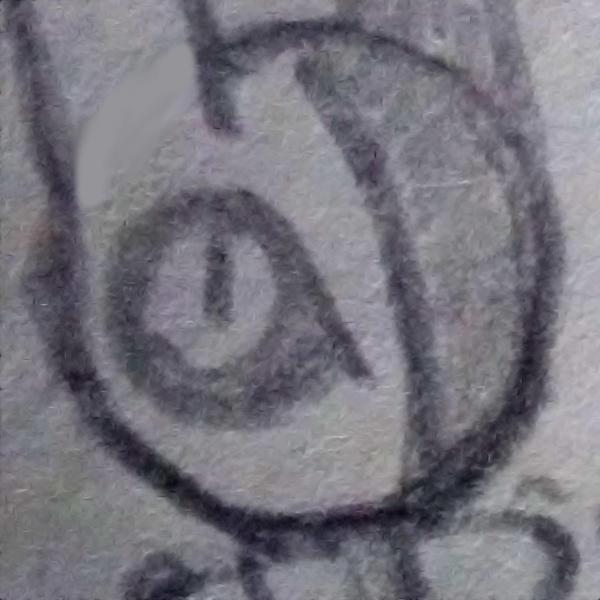
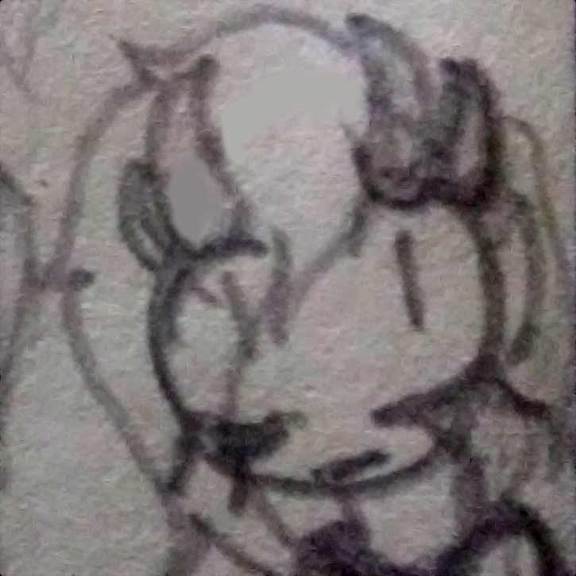
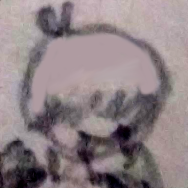

| Isabelle (She/they) | ||
|---|---|---|
|
Also known as: Izzy, Beezul
Likes: Designing characters, 90's/00's aesthetics, overly long video essays I'm usually the one fronting (but we still prefer being referred to by our username 'Anpu', or our system name 'Camilla'). I'm really nothing special, all things considered. | ||
| Izul (She/her) | ||
|---|---|---|
| 
Also known as: N/A
Likes: Lemon Demon, stimming, the concept of MMORPGs I tend to be the one that rationalizes things-- I'm also very curious about the world and how it works, as well as the beauty of nature. | ||
| R0xanne (She/they) | ||
|---|---|---|
| 
Also known as: R0xy, zeRoes
Likes: Punk rock, making OCs, screaming Aberrant fiend who loves to rock. F▓▓k cringe culture, live your best life. | ||
| Mees (Shi/hir) | ||
|---|---|---|
| 
Also known as: N/A
Likes: Food, eating, being affectionate to hir lovers Mees speaks in third person! Shi pops in from time to time to give cuddles to hir partners XP | ||
If you want to learn more about pluralism, here's an invaluable resource on the topic.